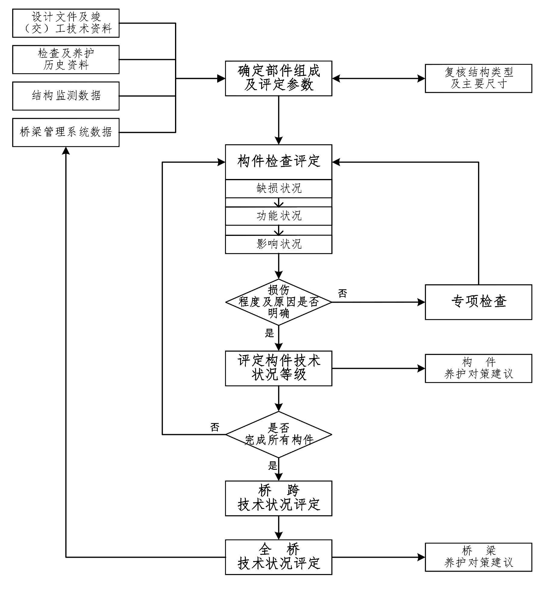

3 基本规定
3 基本规定
3.1 桥梁技术状况评定方法
3.1.1 公路桥梁技术状况评定应采用分层综合法按构件、桥跨、全桥的顺序依次评定。当出现严重缺损时，可采用单项控制指标法评定。
3.1.2 当桥梁存在不同结构形式或不同建设年代的拼宽时，宜将拼宽结构分别划分评定单元进行桥梁技术状况评定。
3.1.3 大型悬索桥、斜拉桥或其他异型结构桥梁，可按本标准规定的方法制定专用的桥梁技术状况评定标准。
条文说明：
本标准规定的桥型覆盖我国绝大多数桥梁类型，部分大型悬索桥、斜拉桥或其他异形结构桥梁的由于受力复杂，细节的构件设置可能和标准列出的构件不完全一致，因此可以结合构件特性、环境条件和养护需求，制定专用的桥梁技术状况评定标准。
3.1.4 下列情况应开展桥梁技术状况评定：
- 初始检查时。
- 定期检查时。
- 构件出现新增严重缺损或异常时。
- 结构监测系统中的结构响应和结构变化指标超限级别为三级时。
- 桥梁结构健康度等级为Ⅲ、Ⅳ级时。
条文说明：
4 根据《公路桥梁结构监测技术规范》（JT/T 1037），主梁竖向位移、主梁横向位移、主梁振动、梁体倾角、主拱拱顶位移、拱脚位移、主缆偏位、索力、体外预应力、支座位移、桥墩倾斜、高墩墩顶位移、塔顶偏位、锚碇位移、基础沉降等结构响应和结构变化数据均为涉及桥梁安全运行的重要指标，超限级别为三级时可能产生导致桥梁局部损坏或整体垮塌的恶性事故，因此提出开展桥梁技术状况评定。
5 根据《公路桥梁结构监测技术规范》（JT/T 1037），桥梁结构健康度等级为Ⅲ、Ⅳ级分别代表中等异常和严重异常。表明多项结构响应和结构变化指标出现超限，为确保桥梁结构安全，因此提出开展桥梁技术状况评定。
3.1.5 桥梁检查方法应符合下列规定：
- 外观检查可采用目测观察结合常规工具、仪器抵近各构件进行检査。
- 采用图像识别、人工智能等技术或设备检查时，应经过检定、校准或比对试验验证，并现场校核确认其准确性。
- 外观检查难以判明构件缺损原因、程度及发展变化速度时，可按本标准附录A 开展专项检查。
条文说明：
1 常规工具、仪器指测量花杆、羊角锤、钢板尺、钢卷尺、测距仪、裂缝测宽仪等。抵近是指在检查人员手可触及范围内。钢结构检查时，《钢结构现场检测技术标准》（GB/T 50621-2010）规定，直接目视检测时眼睛与被检工件表面的距离不得大于 600 mm，视线与被检工件表面所成的夹角不得小于 30°，并宜从多个角度对工件进行观察。
2 近年来，无人机、爬索机器人、机器视觉识别等新技术、新设备在桥梁检查工作中开展了广泛的探索，但关于数据的可靠性业内尚无明确规定。本次修订在鼓励应用新技术、新设备的同时，提出技术或设备需要经过检定、校准或比对试验验证，并现场校核确认其准确性。
3 公路桥梁检查旨在查明构件及桥梁的缺损原因、程度及发展变化速度，并以此作为技术状况评定或养护决策的依据，当构件无法目视或外观检查不能准确判定缺损状况时，需要开展专项检查进一步明确后才能准确评定桥梁技术状况。
3.1.6 桥梁技术状况评定前应准备下列资料：
- 收集设计文件、竣工文件、初始检查报告资料，明确桥梁初始状态。
- 收集桥梁历史检查、养护资料，明确桥梁技术状况发展变化情况。
- 根据上一期技术状况评定以来的结构监测数据，分析结构响应和结构变化指标报警二、三级报警的构件，明确重点检查内容。
- 根据桥梁管理系统数据，核查基础数据及技术资料符合性。
3.1.7 桥梁技术状况评定前应复核桥梁结构类型，并按本标准附录 B 确定桥梁部件组成及评定参数。
条文说明：
根据近年来技术状况评定报告情况看，《公路桥梁技术状况评定标准》（JTG/TH21-2011）给出 6 类桥型的部件组成划分和评定参数，对评定报告的一致性上起到了很好的作用，但仍有很多桥型因评定人员的差异而。
3.1.8 桥梁技术状况评定流程应按图 3.1.8 的规定执行。

图 3.1.8 桥梁技术状况评定流程
3.2 构件技术状况评定
3.2.1 构件技术状况评定应按构件的缺损状况评定、功能状况评定和影响状况评定的顺序依次开展。
条文说明：
构件技术状况包括缺损状况、功能状况和影响状况，功能状况表示缺损对功能造成的异常，影响状况表示缺损和功能异常对构件和桥梁的影响，三者之间是依次递进的关系，因此评定时需要按照缺损状况、功能状况和影响状况的顺序依次评定。
3.2.2 桥梁上部结构、下部结构应进行耐久性缺损评定，所有构件应进行结构性缺损评定，评定要求见表3.2.2，并按下列规定执行：
- 构件耐久性缺损按建筑材料分别评定，评定标度值为 0、1 或 2。常用材料评定应按本标准第 4 章规定执行。维修加固构造的耐久性缺损应计入原构件耐久性缺损。
- 构件结构性缺损按构件类型分别评定，评定标度值为 0、1、2 或 3。常用构件评定应按本标准第 5 章~第 125 章规定执行。维修加固构造的结构性缺损应按本标准第 13 章规定执行，评定结果应计入原构件结构性缺损。
- 应以构件耐久性缺损和结构性缺损标度最大值作为构件缺损状况标度（EDI）。
| 缺损状况 （EDI） |
评定标度 | |||
| 0 | 1 | 2 | 3 | |
| 耐久性缺损 状况描述 |
完好或局部轻度缺损 | 较多轻度缺损或局部中度缺损 | 较多中度缺损或局部严重缺损 | - |
| 结构性缺损 状况描述 |
完好或局部微小缺损 | 轻度缺损 | 中度缺损 | 严重缺损 |
条文说明：
由于施工期和运营期均可能导致桥梁构件产生缺损，根据缺损产生原因划分为影响构件长期使用寿命的耐久性缺损和可能引发构件力学性能降低的结构性缺损。
1 耐久性缺损包括由于施工期质量问题造成的初始耐久性缺陷、运营期产生的耐久性损伤。由于构件耐久性能取决于建筑材料特性，因此构件的耐久性缺损按主要建筑材料分别评定。
2 结构性缺损包括由于设计或施工失误造成的结构性缺陷或在外部作用下产生的结构性损伤。由于构件结构性能因构件类型和所承担的力学性能有很大差异，因此根据桥型、构件类型及其力学性能进一步细化。
3.2.3 桥梁所有构件应进行功能状况评定，评定要求见表3.2.3，并按下列规定执行：
- 构件功能状况应评定当前缺损对设计使用功能和构件工作性能的异常程度。常用构件功能状况评定应按本标准第 14 章执行。
- 构件功能状况（EFI）评定结果为正常、一般异常和严重异常，应以评定标度最大值作为构件功能状况标度，标度值为 0、1 或 2。
| 功能状况 （EFI） |
评定标度 | |||
| 0 | 1 | 2 | ||
| 正常 | 一般异常 | 严重异常 | ||
| 状况描述 | 功能正常 | 功能受限，尚不影响结构运行 | 功能部分丧失或完全丧失，影响结构运行 | |
条文说明：
每个构件均具有其特定功能，在实际工程中构件产生缺损后会对结构功能造成影响，也有部分构件由于设置不当等原因造成构件自身虽然没有产生明显缺损，但也没有达到预期功能的情况，因此功能状况指标要同时兼顾这两种情况。
3.2.4 桥梁所有构件应进行影响状况评定，评定要求见表3.2.4，并按下列规定执行：
- 构件影响状况评定应分析缺损发展趋势、缺损或功能异常对构件、桥跨或全桥安全带来的影响程度。常用构件影响状况评定应按本标准第 15 章执行。
- 构件影响状况（EAI）评定结果为正常、一般异常和严重异常，应以评定标度最大值作为构件影响状况标度，标度值为-1、0 或 1。
| 影响状况 （EAI） |
评定标度 | |||
| -1 | 0 | 1 | ||
| 正常 | 一般异常 | 严重异常 | ||
| 状况描述 | 缺损发展稳定 | 缺损缓慢发展 | 缺损加速发展；缺损或功能异常可能导致结构整体垮塌；外部风险影响结构安全 | |
条文说明：
影响状况反映构件既有缺损、功能异常及外部风险对桥梁安全运行的影响。缺损发展过快表征构件趋于向不稳定的工作状态发展，需要结合桥梁设计、竣工文件和历次桥梁检查报告、养护历史及结构监测数据综合分析判定。鉴于桥梁结构的复杂性，相邻构件之间除直接传递荷载外，兼有协同工作作用，因此不同程度的缺损、功能不足或功能异常都可能对构件自身、相邻构件或桥跨、桥梁整体安全运行造成影响，因此引入影响状况指标。
3.2.5 构件技术状况标度（ECI）应按式(3.2.5) 计算。
$$\mathtt{ECI}=\mathtt{EDI}+\mathtt{EFI}+\mathtt{EAI}\tag{3.2.5}$$
3.2.6 构件技术状况等级（ECL）应分为 1 类、2 类、3 类、4 类和 5 类，分类界限及其代表的状应按表3.2.6的规定执行。
| 项目 | 构件技术状况标度（ECI） | |||||
| 0 | 1 | 2 | 3 | 4 | ≥5 | |
| 构件技术状况等级 （ECL） |
1类 | 2类 | 3类 | 4类 | 5类 | |
| 代表的状态 | 完好、良好 | 较好 | 较差 | 差的 | 危险 | |
3.3 桥跨技术状况评定
3.3.1 桥跨技术状况评定应以组成桥跨的所有构件技术状况标度按结构、桥跨的顺序依次开展。
3.3.2 结构技术状况指数应以所在桥跨各构件技术状况按式(3.3.2) 计算。
$$\mathrm{FSCI} _{crit(i)}=100- {\textstyle \sum_{1}^{\mathrm{n} }} \mathrm{CI} _{\mathrm{crit} (i)}\omega /5\tag{3.3.2-1}$$ $$\mathrm{SPCI} _{crit(i)}=100- {\textstyle \sum_{1}^{\mathrm{n} }} \mathrm{CI} _{\mathrm{crit} (i)}\omega /5\tag{3.3.2-2}$$ $$\mathrm{SBCI} _{crit(i)}=100- {\textstyle \sum_{1}^{\mathrm{n} }} \mathrm{CI} _{\mathrm{crit} (i)}\omega /5\tag{3.3.2-3}$$ $$\mathrm{ACCI} _{crit(i)}=100- {\textstyle \sum_{1}^{\mathrm{n} }} \mathrm{CI} _{\mathrm{crit} (i)}\omega /5\tag{3.3.2-4}$$
| 式中： | —— | 第 i 跨桥面系技术状况指数（0-100）； | |
| —— | 第 i 跨上部结构技术状况指数（0-100）； | ||
| —— | 第 i 跨下部结构技术状况指数（0-100）； | ||
| —— | 第 i 跨附属构造技术状况指数（0-100）； | ||
| —— | 第 i 跨某结构中同类构件技术状况标度最大值，即； | ||
| —— | 第 i 跨第 j 个构件技术状况标度； | ||
| ω | —— | 部件权重值（附录 B），无需设置的构件，其权重在相应的桥面系、上部结构、下部结构或附属构造中按权重比例重新分配； | |
| i | —— | 桥跨编号； | |
| j | —— | 本桥跨同类构件数量； | |
| n | —— | 桥面系、上部结构、下部结构或附属构造的组成部件数量。 |
条文说明：
计算桥跨技术状况时，相邻两跨共用的桥墩、支座、伸缩装置等在两跨均要计算；附属构造在所在桥跨或相接桥跨计算。
3.3.3 结构平均技术状况指数应以所在桥跨各构件技术状况按式(3.3.3) 计算。
$$\mathrm{FSCI} _{av(i)}=100- {\textstyle \sum_{1}^{\mathrm{n} }} \mathrm{CI} _{\mathrm{av} (i)}\omega /5\tag{3.3.3-1}$$ $$\mathrm{SPCI} _{av(i)}=100- {\textstyle \sum_{1}^{\mathrm{n} }} \mathrm{CI} _{\mathrm{av} (i)}\omega /5\tag{3.3.3-2}$$ $$\mathrm{SBCI} _{av(i)}=100- {\textstyle \sum_{1}^{\mathrm{n} }} \mathrm{CI} _{\mathrm{av} (i)}\omega /5\tag{3.3.3-3}$$ $$\mathrm{ACCI} _{av(i)}=100- {\textstyle \sum_{1}^{\mathrm{n} }} \mathrm{CI} _{\mathrm{av} (i)}\omega /5\tag{3.3.3-4}$$
| 式中： | —— | 第 i 跨桥面系技术状况指数（0-100）； | |
| —— | 第 i 跨上部结构技术状况指数（0-100）； | ||
| —— | 第 i 跨下部结构技术状况指数（0-100）； | ||
| —— | 第 i 跨附属构造技术状况指数（0-100）； | ||
| —— | 第 i 跨某结构中同类构件技术状况标度平均值，即； | ||
| —— | 第 i 跨第 j 个构件技术状况标度； | ||
| ω | —— | 部件权重值（附录 B），无需设置的构件，其权重在相应的桥面系、上部结构、下部结构或附属构造中按权重比例重新分配； | |
| i | —— | 桥跨编号； | |
| j | —— | 本桥跨同类构件数量； | |
| n | —— | 桥面系、上部结构、下部结构或附属构造的组成部件数量。 |
条文说明：
计算桥跨技术状况时，相邻两跨共用的桥墩、支座、伸缩装置等在两跨均要计算；附属构造在所在桥跨或相接桥跨计算。
3.3.4 桥跨技术状况指数应以所在桥跨各结构技术状况按式(3.3.4-1)计算，桥跨平均技术状况指数应以所在桥跨各结构技术状况按式(3.3.4-2)计算。
$$\mathrm{BSCI} _{crit(i)}=\gamma \mathrm{FSCI} _{crit(i)}+\gamma \mathrm{SPCI} _{crit(i)}+\gamma \mathrm{SBCI} _{crit(i)}+\gamma \mathrm{ACCI} _{crit(i)}\tag{3.3.4-1}$$ $$\mathrm{BSCI} _{av(i)}=\gamma \mathrm{FSCI} _{av(i)}+\gamma \mathrm{SPCI} _{av(i)}+\gamma \mathrm{SBCI} _{av(i)}+\gamma \mathrm{ACCI} _{av(i)}\tag{3.3.4-2}$$
| 式中： | —— | 第 i 跨桥跨技术状况指数； | |
| —— | 第 i 跨桥跨平均技术状况指数； | ||
| —— | 桥面系、上部结构、下部结构和附属构造的影响系数（附录 B）。 |
3.3.5 桥跨、结构技术状况等级应分为 1 类、2 类、3 类、4 类和 5 类，分类界限应以桥跨、结构技术状况指数按表3.3.5规定执行。
| 项目 | 桥跨或结构技术状况指数 (BSCI𝑐𝑟𝑖𝑡、FSCI𝑐𝑟𝑖𝑡、SPCI𝑐𝑟𝑖𝑡、SBCI𝑐𝑟𝑖𝑡、ACCI𝑐𝑟𝑖𝑡) |
||||
| [90,100] | [75,90) | [60,75) | [40,60) | [0,40) | |
| 桥跨或结构技术状况等级 (BSCL、FSCL、SPCL、SBCL、ACCL) |
1类 | 2类 | 3类 | 4类 | 5类 |
3.3.6 主要构件技术状况等级为 4 类或 5 类且影响桥梁安全时，所在桥跨技术状况等级应按照该构件最差技术状况等级评定，各桥型主要构件见表3.3.6。
| 序号 | 桥型 | 主要构件 |
| 1 | 梁桥 | 主梁、支座、桥墩、桥台、基础 |
| 2 | 拱桥 | 主拱圈（拱板、拱肋、拱箱、拱片）及横向联系、腹拱墩或立柱、腹拱圈、桥面板、桥墩、桥台、基础 |
| 3 | 组合体系拱桥 | 拱肋及横撑、立柱、桥面板、吊杆、系杆、桥墩、桥台、基础 |
| 4 | 悬索桥 | 加劲梁、主支座、吊索及索夹、主缆、索塔及索鞍、锚碇及锚固系统、桥墩、桥台、基础 |
| 5 | 斜拉桥 | 斜拉索 （拉索、锚具）、主梁、主支座、索塔、桥墩、桥台、基础 |
条文说明：
主要构件指在结构中主要承担或传递荷载功能的构件，发生严重缺损时易引发结构失稳或桥梁垮塌事故，一般指上部结构和下部结构的主要组成构件。主要构件的严重缺损可能引起桥梁局部或整体垮塌，因此当主要构件技术状况等级为4 类或 5 类时，根据构件当前状态对桥梁运行安全的影响程度确定是否按构件的技术状况等级作为所在桥跨的技术状况，并说明理由。
3.4 桥跨技术状况评定
3.4.1 单跨桥梁应以桥跨平均技术状况指数𝐁𝐒𝐂𝐈𝒂𝒗作为全桥技术状况指数（BCI）。
3.4.2 多跨桥梁全桥技术状况指数（BCI）应以各桥跨平均技术状况指数𝐁𝐒𝐂𝐈𝒂𝒗(𝒊)按式(3.4.2)计算。
$$\mathrm{BCI} =\dfrac{\sum\nolimits_{1}^{m}L_{i}\mathrm{BSCI} _{av(i)}}{\sum\nolimits_{1}^{m}L_{i} }\tag{3.4.2}$$
| 式中： | —— | 全桥技术状况指数（0-100）； | |
| —— | 第 i 跨桥跨平均技术状况指数； | ||
| —— | 第 i 跨跨径（m）； | ||
| —— | 桥跨数量。 |
3.4.3 全桥技术状况等级应分为 1 类、2 类、3 类、4 类和 5 类，分类界限应以全桥技术状况指数按表3.4.3规定执行。
| 项目 | 全桥技术状况指数 (BCI) |
||||
| [90,100] | [75,90) | [60,75) | [40,60) | [0,40) | |
| 全桥技术状况等级 (BCL) |
1类 | 2类 | 3类 | 4类 | 5类 |
3.4.4 多跨桥梁中某桥跨技术状况等级为 4 类或 5 类时，应以最差桥跨技术状况等级作为全桥技术状况等级。
3.4.5 当桥梁出现下列任一情况时，全桥技术状况等级应为 5 类：
- 主梁控制截面全截面开裂或梁板断裂、落梁。
- 主梁严重异常位移，有失稳或落梁趋势。
- 主梁明显的永久变形，变形大于规范值并伴随严重开裂。
- 组合结构主梁结合面贯通开裂，组合作用严重降低。
- 梁、拱等主要承重构件严重异常位移，有失稳或落梁趋势。
- 拱桥主拱圈严重变形或局部压溃。
- 圬工拱桥主拱圈砌体大范围断裂、脱落。
- 拱桥拱脚严重错台、位移。
- 关键部位混凝土压碎或失稳倾向。
- 桥面板、腹拱圈穿孔、塌陷或断裂。
- 拉吊索严重锈蚀或断裂。
- 桥墩、桥台严重倾斜。
- 墩台基础明显位移、下沉、倾斜。
- 扩大基础冲刷至基础底面。
- 悬索桥锚碇异常位移或沉降。
条文说明：
桥梁关键部位出现严重缺损可能危及桥梁安全，为便于特殊情况下的简单判定，《公路桥梁技术状况检查评定标准》（JTG H21-2011）首次提出 5 类桥梁单项控制指标，本次修订在原有条款基础上适当优化。在桥梁检查中发现符合此节规定的任一情况时，应将桥跨及桥梁技术状况等级评定为 5 类，但仍需采用分层综合法评定。
3.5 桥跨技术状况评定
3.5.2 应根据构件技术状况等级按表3.5.2采取相应的养护对策。
| 构件 技术状况等级 |
状态 | 养护对策 |
| 1类 | 完好、良好 | 正常保养 |
| 2类 | 较好 | 正常保养/预防养护 |
| 3类 | 较差 | 预防养护/修复养护 |
| 4类 | 差 | 修复养护/加固或更换 |
| 5类 | 危险 | 加固或更换 |
条文说明：
《公路桥涵养护规范》（JTG 5120）规定了桥梁技术状况等级对应的养护对策。考虑到部分桥梁管养单位针对不同桥梁同类构件开展集中养护的需求，可达到精准提升的目标，对桥梁养护管理做到了良好的示范，为了便于进一步推广，本标准结合调研及经验总结提出针对构件的养护对策建议。具体对策制定需要根据缺损的范围、程度，结合《公路桥梁耐久性检测评定规程》（JTG/T 5216）和《公路桥涵养护规范》（JTG 5120）要求和管养单位的养护计划综合考虑。
3.5.3 应根据桥梁技术状况等级按表3.5.3采取相应的养护对策。
| 桥梁 技术状况等级 |
状态 | 养护对策 |
| 1类 | 完好/优 | 正常保养或结合环境条件及预期使用寿命开展预防养护 |
| 2类 | 良好/良 | 较多耐久性缺损时开展预防养护； 较多结构性缺损时开展修复养护 |
| 3类 | 合格/中 | 及时开展修复养护，同步处治耐久性缺损； 有严重结构性缺损或功能严重异常时加固或更换构件； 必要时可进行交通管制 |
| 4类 | 不合格/次 | 立即开展修复养护、加固或改造； 及时进行交通管制，必要时封闭交通 |
| 5类 | 危险/差 | 及时封闭交通，改建或重建 |
\(\ \)